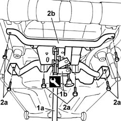

4420D42 REAR SUSPENSION BEAM - R R
- Path
- Procedures > 44 SUSPENSION AND WHEELS > 4420 REAR SUSPENSION > 4420D REAR SUSPENSION AXLE/CROSSBEAM > 4420D42 REAR SUSPENSION BEAM - R R
- Kind
- repair procedure (removal / refitting; the operation number is the code)
- Applies to
- engines: 1.2 8v; all production periods
- Interactive page
- https://sloeber94.github.io/elrnDB-fPnd/en/#/169001852
Applies to: engines: 1.2 8v; all production periods
 Removing
Removing
 Refitting
RefittingPosition the vehicle on a lift.
Op. 4450B06 LEFT REAR WHEEL R R
Op. 4450B08 RIGHT REAR WHEEL R R
[Both]
Op. 4420A30 L/H OR R/H REAR SUSPENSION DAMPER (ONE) - R+R
[Both]
Op. 2410A52 VISCOUS JOINT BETWEEN THE TRANSMISSION SHAFTS - R.R. FOR PERMANENT VERSION
Op. 1076B11 FULL EXHAUST PIPING - R.R. FOR FOUR-WHEEL DRIVE MODELS
Op. 2720C10 DIFFERENCIAL UNIT - R.R.
Op. 4420C10 REAR SUSPENSION STABILIZER BAR - R+R
Op. 2720D10 SEMISHAFT WITH LEFT OR RIGHT JOINT (ONE) - R.R.
[Both]
Op. 4420B10 L/H OR R/H REAR SUSPENSION WISHBONE (ONE) - R+R
[Both]
1. Position a hydraulic lift (1a) with support plate (1b).
Description | Code | Function | |
|---|---|---|---|
1b | Plate | 1.870.856.000 | Support |
2. Undo the bolts (2a) and remove the rear suspension beam (2b).

Applies to: engines: 1.2 8v; all production periods
Refitting
RemovingPosition the rear suspension beam and tighten the bolts.
Op. 4420B10 L/H OR R/H REAR SUSPENSION WISHBONE (ONE) - R+R
[Both]
Op. 2720D10 SEMISHAFT WITH LEFT OR RIGHT JOINT (ONE) - R.R.
[Both]
Op. 4420C10 REAR SUSPENSION STABILIZER BAR - R+R
Op. 2720C10 DIFFERENCIAL UNIT - R.R.
Op. 1076B11 FULL EXHAUST PIPING - R.R. FOR FOUR-WHEEL DRIVE MODELS
Op. 2410A52 VISCOUS JOINT BETWEEN THE TRANSMISSION SHAFTS - R.R. FOR PERMANENT VERSION
Op. 4420A30 L/H OR R/H REAR SUSPENSION DAMPER (ONE) - R+R
[Both]
Op. 4450B08 RIGHT REAR WHEEL R R
[Both]
Topics linked from this page (9)
- 1076B11 FULL EXHAUST PIPING - R.R. FOR FOUR-WHEEL DRIVE MODELS
- 2410A52 VISCOUS JOINT BETWEEN THE TRANSMISSION SHAFTS - R.R. FOR PERMANENT VERSION
- 2720C10 DIFFERENCIAL UNIT - R.R.
- 2720D10 SEMISHAFT WITH LEFT OR RIGHT JOINT (ONE) - R.R.
- 4420A30 L/H OR R/H REAR SUSPENSION DAMPER (ONE) - R+R
- 4420B10 L/H OR R/H REAR SUSPENSION WISHBONE (ONE) - R+R
- 4420C10 REAR SUSPENSION STABILIZER BAR - R+R
- 4450B06 left rear wheel r r
- 4450B08 right rear wheel r r